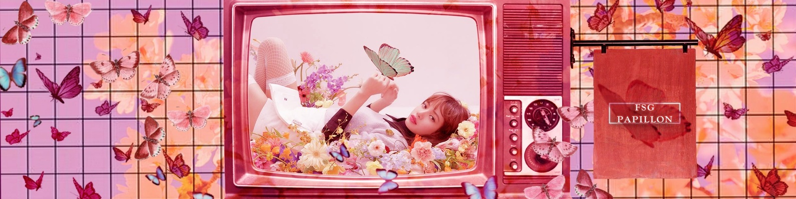

FSG Papillon переводит не так давно. Но бывают довольно редкие проекты, что очень ценно.
Дата основания и основная информация
Началом пути данной группы считается октябрь 2019 года.
Как видете группа еще совсем юная,
но делает успехи в этом непростом деле.
Всего в группе 21 проект, некоторые уже закончены, некоторые еще в процессе.
Помимо дорам группа переводит развлекательные шоу.
